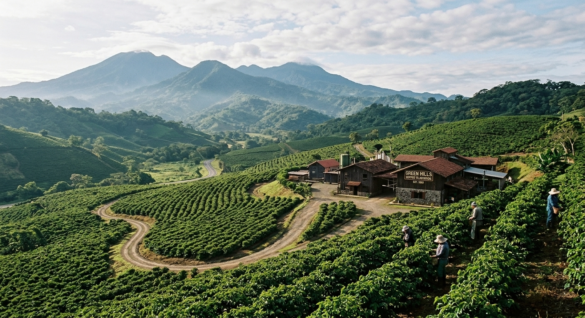

About Our Plantation
Green Hills Coffee Plantation is a beautiful farm dedicated to growing high-quality coffee. We welcome visitors, tourists and potential coffee buyers to learn and see the beatuful farm about our coffee farming activities and production process.

Coffee Varieties Grown
Our plantation grows the following coffee varieties:
- Arabica
- Robusta
- Batian
- Ruiru 11
Coffee Production Stages
The five main stages of coffee production are:
- Planting coffee seeds or seedlings.
- Harvesting ripe coffee cherries.
- Processing the coffee cherries to remove the beans.
- Drying and roasting the coffee beans.
- Packaging the finished coffee for sale.
Coffee Plantation Activities
- Pruning
- Pruning involves cutting unwanted branches from coffee plants to encourage healthy growth and improve coffee production.
- Harvesting
- Harvesting involves picking ripe coffee cherries from the coffee plants.
- Drying
- Drying involves removing moisture from processed coffee beans to prepare them for storage and further processing.